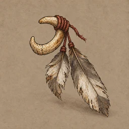

낡은 깃매듭T1 · 설오기본 능력치기초 옵션
설오가 오래도록 활에 매어 둔 깃매듭.
상세
낡은 깃매듭 · itm_se_01
설오가 오래도록 활에 매어 둔 깃매듭. 바람을 읽을 때면 화살보다 먼저 이 깃을 본다.
부모 확정 원고입니다. 아래의 획득 근거와 새로 작성한 배경 설정을 구분합니다.
- 획득 근거
- 설오 정규 합류 기록에 연결된 초기 장비. 새 회차의 전투 전 준비 규칙을 유지한다.
- 근거 상태·ID
- 현재 런타임 획득 근거 / eq_se_start
- 근거 소스
- shared/runtime/equipment-state.js
- 창작 설정의 범위
- 이번 요청으로 작성한 사용 습관·배경 설정. 별도 장면·인물·퀘스트를 구현했다는 뜻은 아니다.
- 현재 분류
- 기초 옵션만
- 현재 기초 옵션
- 공격 +2%
- 기존 효과 연결 (유지)
- 없음
- 외형·소품 개념
- 활 결속 / 기본시·절명
- 기초 대상 제안 (미적용)
- A01 평사 · A14 급소시
- 매핑 검토
- 현재 외형·개념과 연결 유지. 수치 보정은 고유능력으로 부르지 않는다. T1부터 해당 기본기/계열의 피해·범위·비용 보정을 기초 옵션으로 허용하는 안이며 아직 수치 적용 전이다.
- 이번 적용 범위
- 부모 확정 원고 그대로 적용. 기존 분류·옵션·효과·획득 조건·보상 선택·저장 구조는 유지.